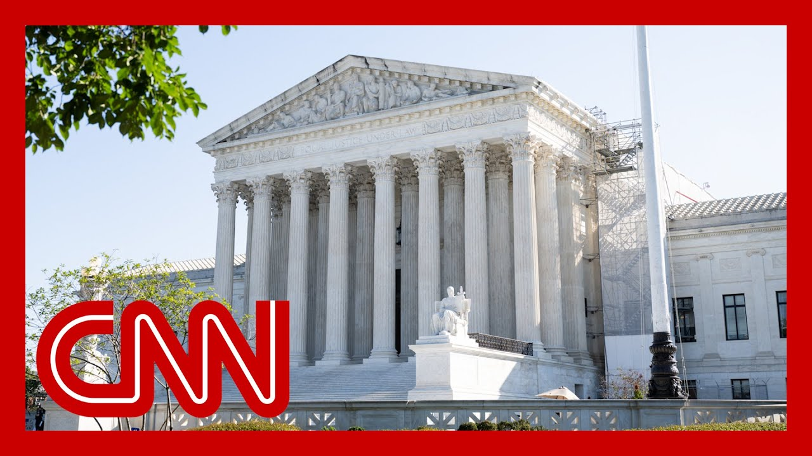

【最高法院允许特朗普终止50万移民的假释计划】
Summary: The U.S. Supreme Court ruled to let the Trump administration end deportation protections for 500,000 immigrants from Cuba, Haiti, Nicaragua, and Venezuela, marking its second intervention this month favoring immigration policy rollbacks.
摘要： 美国最高法院裁定允许特朗普政府终止对来自古巴、海地、尼加拉瓜和委内瑞拉的50万移民的驱逐保护，这是本月最高法院第二次干预并支持收紧移民政策。

⏱️ Estimated Reading Time: 10 min
A new ruling from the U.S. Supreme Court.
美国最高法院发布了一项新裁决。
The justices will allow the Trump administration to end deportation protections for half a million immigrants from Cuba, Haiti, Nicaragua and Venezuela.
法官们将允许特朗普政府终止对来自古巴、海地、尼加拉瓜和委内瑞拉的50万移民的驱逐保护。
CNN Chief Supreme Court analyst The Scoop it joins us now.
CNN首席最高法院分析师The Scoop现在加入我们。
What more do we know about this, John?
约翰，关于此事我们还知道些什么？
Good to see you, Pamela.
帕梅拉，很高兴见到你。
And Wolf.
还有沃尔夫。
This is the second time in this month that the Supreme Court has intervened in a case at an early stage and said that the Trump administration can start rolling back deep portation protections for certain groups of migrants.
这是本月最高法院第二次在早期阶段干预案件，并允许特朗普政府开始取消对某些移民群体的驱逐保护。
As you said, this one involves Cuban, Haitian, Venezuelan and Nicaraguan migrants who are here.
如你所说，这涉及目前在美的古巴、海地、委内瑞拉和尼加拉瓜移民。
Nearly half a million people who had been granted a type of humanitarian parole, during the Biden administration.
近50万人在拜登政府期间获得了一种人道主义假释。
But the humanitarian protections here, go all the way back to the 1950s.
但这里的人道主义保护可以追溯到20世纪50年代。
But for these this group of migrants, that has now been lifted.
但对这群移民来说，这一保护现已被取消。
And, the merits of the case will continue in lower courts, Pamela.
帕梅拉，此案的实质问题将继续在下级法院审理。
But for now, it really gives the green light for the Trump administration to, begin deporting people.
但目前，这确实为特朗普政府开始驱逐人员开了绿灯。
And earlier this month, there were, hundreds of thousands of Venezuelans who were at stake in a separate, temporary protected status case who also, lost at this initial stage.
本月早些时候，数十万委内瑞拉人在另一项临时保护身份案件中面临风险，他们也在这一初期阶段败诉。
The Supreme Court's order was not signed.
最高法院的命令未签署。
There was no explanation.
没有解释。
only two justices broke off to dissent.
只有两名大法官提出异议。
liberal Sonia Sotomayor and Ketanji Brown Jackson.
自由派的索尼娅·索托马约尔和凯坦吉·布朗·杰克逊。
but certainly what the Trump administration has been getting, at least in these types of deportation cases, is a green light, from the Supreme Court.
但可以肯定的是，特朗普政府至少在驱逐案件中得到了最高法院的绿灯。
it as you know, an administration has broad powers over immigration, but it's that the legal issues go to how quickly they can roll back things if there's been, sufficient notice, whether they followed proper procedures.
如你所知，政府在移民问题上拥有广泛权力，但法律问题在于如果有充分通知且遵循了适当程序，他们能以多快的速度撤销政策。
And those questions will continue.
这些问题将继续存在。
it's definitely a win for the Trump administration.
这无疑是特朗普政府的胜利。
For the second time this month, the U.S. Supreme Court has handed the Trump administration a win in its battle against immigration.
本月第二次，美国最高法院在移民斗争中为特朗普政府带来胜利。
Happening a short time ago, the court said it would allow the Trump administration to suspend a Biden era program that allowed a half million immigrants from Cuba, Haiti, Nicaragua and Venezuela to work and live in the United States temporarily.
不久前，法院表示将允许特朗普政府暂停拜登时代的一项计划，该计划允许来自古巴、海地、尼加拉瓜和委内瑞拉的50万移民暂时在美国工作和生活。
The white House deputy chief of staff had this to say about the ruling.
白宫副幕僚长对此裁决发表了看法。
It's not the job of a district court judge to perform an individual green light or red light on every single policy that the president takes as the head of the executive branch.
地区法院法官的职责不是对总统作为行政首脑采取的每一项政策单独开绿灯或红灯。
This is the most litigated issue over the last ten years.
这是过去十年中诉讼最多的问题。
Over the last ten years, whether or not to deport the foreigners who invaded our country illegally, that is the most litigated issue.
过去十年中，是否驱逐非法入侵我国的外国人是最多诉讼的问题。
You want a democracy in this country?
你想要这个国家的民主吗？
When Americans vote, when they cry out and they beg for a president to come and save them from this invasion, and some district court judge in San Francisco or Manhattan or Los Angeles tries to shut it down and shield these foreigners from deportation.
当美国人投票，当他们呼吁并恳求总统来拯救他们免受这种入侵时，旧金山、曼哈顿或洛杉矶的某个地区法院法官却试图阻止并保护这些外国人免遭驱逐。
So Alvarez joins us now live from Washington with the details.
现在阿尔瓦雷斯从华盛顿为我们带来详细报道。
So we're talking about a half a million immigrants here who came to the United States and were accepted under President Biden, under the guise of humanitarian, parole as their status.
我们谈论的是50万移民，他们在拜登总统领导下以人道主义假释身份来到美国并被接纳。
Now they're going to lose their work permits.
现在他们将失去工作许可。
Priscilla.
普莉希拉。
And what does that mean in terms of their status here?
这对他们在这里的身份意味着什么？
Are they going to have to leave immediately?
他们必须立即离开吗？
Well, this is certainly a major blow to the nationals of those four countries, but we should know or know that there were some or many of these migrants that once they arrived to the United States through this parole program, sought other forms of protection and immigration relief.
这对这四个国家的国民无疑是一个重大打击，但我们应该知道，其中一些或许多移民通过假释计划到达美国后，寻求了其他形式的保护和移民救济。
This is particularly true with Cubans as well as some of these other nationalities, because, again, while the parole program allowed them to be vetted, and come through to the United States in an organized way, that's the way the Biden administration had framed it.
古巴人和其他一些国籍的人尤其如此，因为假释计划允许他们接受审查并以有组织的方式进入美国，这是拜登政府的说法。
when they were here, they could apply to other forms of relief.
当他们在这里时，他们可以申请其他形式的救济。
We just don't have that number.
我们只是没有这个数字。
But all the same, it will impact, again, these four nationalities in the United States.
但同样，这将再次影响在美国的这四个国籍的人。
Now, what the Supreme Court ruled here is that the administration could end these deportation protections.
最高法院在此裁定的是政府可以终止这些驱逐保护。
It wasn't, the final decision.
这不是最终决定。
This is going to continue in the lower courts.
这将在下级法院继续审理。
And two of the liberal justices, dissented in this decision.
两名自由派大法官对此决定提出异议。
but in addition to that, this has been a program that was the target of Republicans during the Biden administration, because even though this has been an existing authority, this being parole, Republicans argued that former President Joe Biden, overreached when he allowed these nationalities to come to the United States via this program, a program or rather, an authority, that was supposed to be done by in a case by case basis.
除此之外，这一计划一直是拜登政府期间共和党的目标，因为尽管假释是一项现有权力，但共和党人认为前总统乔·拜登在允许这些国籍的人通过该计划来美时越权了，该计划或权力本应逐案处理。
Now, this program, just to give viewers, a background as to what needed to happen here, individuals will be vetted to come to the United States.
现在，为了让观众了解这里需要发生的事情，个人将接受审查才能来美国。
They also need to have a sponsor in the United States in some tie in the United States already to come through this program.
他们还需要在美国有一个担保人或某种联系才能通过该计划。
And as you mentioned there at the top, nearly half a million people benefited from it.
正如你在开头提到的，近50万人从中受益。
Now, this, again, we will try to get numbers as to how many remain in this program that could be impacted.
现在，我们将再次尝试获取可能受影响的仍在该计划中的人数。
But it was supposed to be a two year program for them to live and work in the United States legally.
但这本应是一个为期两年的计划，让他们合法地在美国生活和工作。
Now, as you also mentioned, this is the second time the Supreme Court has sided with the administration, the administration, of course, peeling back many of the deportation protections that were issued under the Biden administration.
正如你也提到的，这是最高法院第二次站在政府一边，政府当然是在撤销拜登政府发布的许多驱逐保护措施。
And as a result, many hundreds of thousands of people will now be without papers in the United States, which, of course, could make them eligible for deportation.
因此，现在数十万人在美国将没有合法身份，这当然可能使他们有资格被驱逐。
All of this, of course, Brianna, as we've learned from sources, that there is now yet another push by the white House to arrest far more people, 3000 people a day, as they try to execute on those lofty goals set by the president, a million deportations annually.
布里安娜，当然，正如我们从消息来源得知，白宫现在又推动逮捕更多人，每天3000人，因为他们试图实现总统设定的崇高目标，每年驱逐100万人。
So all of this is happening against the backdrop of this immense pressure, by the white House to execute more immigration arrests and deportations.
因此，所有这一切都是在白宫施加的巨大压力下发生的，要求执行更多的移民逮捕和驱逐。
And certainly more people may fall in the crosshairs of those operations.
当然，更多的人可能会成为这些行动的目标。
following today's Supreme Court ruling.
在今天的最高法院裁决之后。
All right.
好的。
Priscilla Alvarez in Washington for us.
普莉希拉·阿尔瓦雷斯在华盛顿为我们报道。
Thank you.
谢谢。